--------------------2023--------------------
172." "Chiral Active Surface Growth via Glutathione Control”, Yonglong Zheng, QianWang, Yiwen Sun, Jie Huang, Jin Ji, Zhu-Jun Wang, Yawen Wang*, Hongyu Chen*,
Advanced Optical Materials , 2023, in revision.
171." Regio-selective Growth of Plates on Au Nanorods”, Mengmeng Zhang, YuntaoWang, Xudong Peng, Hong Wang*, Hongyu Chen*,
Materials Today Chemistry, 2023, in revision.
170." A Facile Route to Janus Nanorods via Redox-Assisted Ripening”, Yiwei Sun,Dongfu Wang, Zhouling Wu, Jie Huang, Hongyu Chen*, Xueyang Liu*,
Materials Chemistry Frontiers, 2023,published online, https://doi.org/10.1039/D2QM01109C.
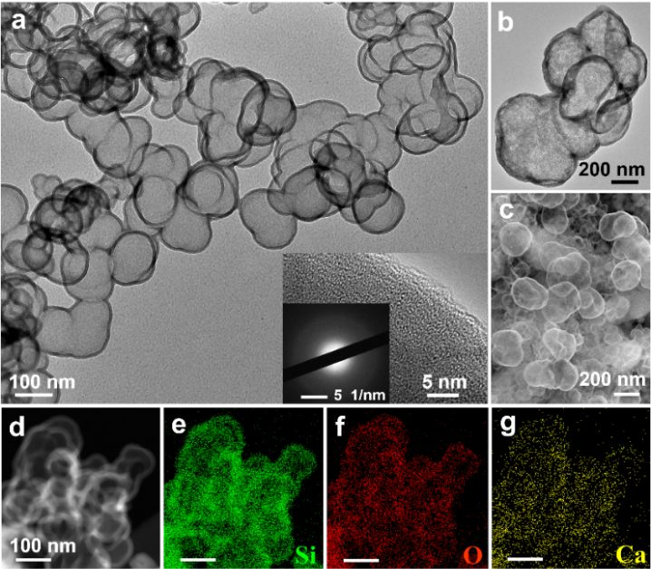
169.“Inorganic-Organic Coprecipitation: Spontaneous Formation of Enclosedand Porous Silica Compartments with Enriched Biopolymers”,
XuejunCheng, Jie Huang, Ruoxu Wang, Yue Xu, Nan Wu, Jie Zhou*, Xueyang Liu*, HongWang*, Hongyu Chen*, Nanoscale,
2023, 15, 2394-2401.
168.“Exploringthe Generality of Ligands for Silica-Encapsulated Nanoclusters as SERS Labels”,Aodi Zhang, Yusai Zhou, Feng Xue, Xudong Peng, Hongyu Chen, Hong Wang*,
Journal of Colloid And Interface Science,2023, published online, https://doi.org/10.1002/admi.202201538.
167.“ Study ofNanoparticle–Polymer Interactions via the Mechanical Stretching ofSurface-Enhanced Raman Scattering Substrates”, Wenwen Xin, Jie Huang, QiuxianChen, Yiwei Sun, Hongyu Chen, Xueyang Liu*,
Macromolecular Rapid Communications, 2023, publishedonline, https://doi.org/10.1002/marc.202200541.
166.“ElectrospunFiber as a Facile Means of Studying Silver Nanowires under Mechanic al Stretching”, JieHuang, Guangyu He, Yuxiong Hu, Yiwei Sun, Dongfu Wang, Zhu-Jun Wang*, XueyangLiu*, Hongyu Chen*, Small Science,
2023, published online, https://doi.org/10.1002/smsc.202200069.
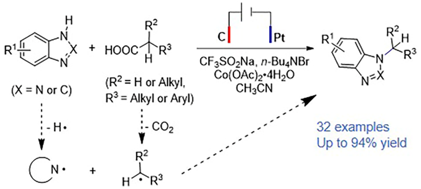
165.“AerobicElectrochemical Csp3–N Coupling between Aliphatic Carboxylic Acids andN-heterocycles”, Ruonan Chen, Hongyan Yuan, Yawen Wang, Hongyu Chen andYanhua Zhang*,
Organometallics,2023, 42(1), 1–5.
--------------------2022--------------------
 164.“Coalescenceof Au–Pd Nanoropes and their Application as Enhanced Electrocatalysts for theOxygen Reduction Reaction”, Jialong Yu, Hui Jin, Qian Wang, Xiaoliang Wei, HongyuChen and Yawen Wang*,
Small,2022, 18(44), 2203458.
164.“Coalescenceof Au–Pd Nanoropes and their Application as Enhanced Electrocatalysts for theOxygen Reduction Reaction”, Jialong Yu, Hui Jin, Qian Wang, Xiaoliang Wei, HongyuChen and Yawen Wang*,
Small,2022, 18(44), 2203458.
163.“Self-templatingsynthesis of Pd4S hollow nanospheres as electrocatalysts for oxygen reductionreaction”, Qian Wang, Donghui Zhao, Jialong Yu, Lijie Shi, Yawen Wang* and HongyuChen*,
Nano Research, 2022,https://doi.org/10.1007/s12274-022-5052-5.
162.“Enhancingthe Mechanical Robustness of Gold Nanowire Array via Sulfide-Mediated Growth”,Dongmeng Su, Zhenhui Lam, Yonglong Zheng, Yawen Wang, Bin Liu* and HongyuChen*,
Small Structures, 2022,3(7), 2200014.
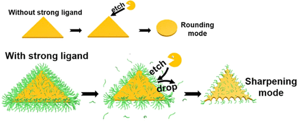
161.“SerratedAu Nanoplates via the Sharpening Etching Mode”, Bowen He, Yuntao Wang, MengmengZhang, Yue Xu, Yonglong Zheng, Xi Liu, Hong Wang* and Hongyu Chen*, Chemistryof Materials, 2022, 34(18),
8213-8218.
160.“Insilico Investigation on the Twisting of Gold Nanowires”, Guangyu He, RuoxuWang, Jie Fan, Shi Liu, Hongyu Chen*, Materials TodayCommunications
, 2022,33, 104319.
159.“Exploringthe Generality of PVP-Assisted Phase Transfer of Nanoparticles”, Feng Xue, AodiZhang, Xudong Peng, Shiyan Zhou, Guoxu Feng, Hongyu Chen, Hong Wang* , AdvancedMaterials Interfaces, 2022
, 9(32), 2201538.
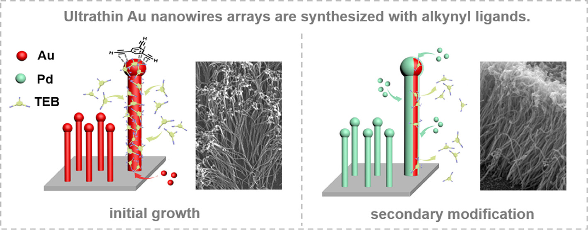
158.“Alkynylligands-induced growth of ultrathin nanowires arrays”, Xi Wang, MD Golam Moula,Guangyu He, Hui Jin, Dongmeng Su, Jianpeng Zong, Yanhua Zhang, Hongyu Chen,Yawen Wang*, Journal of Colloid and Interface Science, 2022
, 627, 640-649.
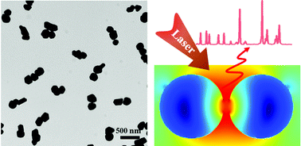
157.“Controllablesynthesis of gold nanoparticle dimers via site-selective growth”, MengmengZhang‡, Yue Xu‡, Xudong Peng, Hongyu Chen and HongWang*, Chemical Communications
, 2022, 58(57), 7932-7935.
156.“Improvingthe Photostability of [Ru(bpy)(3)](2+) by Embedment in Silica”, Jingjing Wang,Shiyan Zhou, Bo Li, Xueyang Liu*, Hongyu Chen, Hong Wang*, ChemPhotoChem,2022, 6(10), e202200124.
155.“TurningWeak into Strong: On the CTAB-Induced Active Surface Growth”, Yonglong Zheng,Jianpeng Zong, Ting Xiang, Quan Ren, Dongmeng Su, Yuhua Feng, Yawen Wang & HongyuChen*, Science China Chemistry, 2022, 65(7),1299-1305.
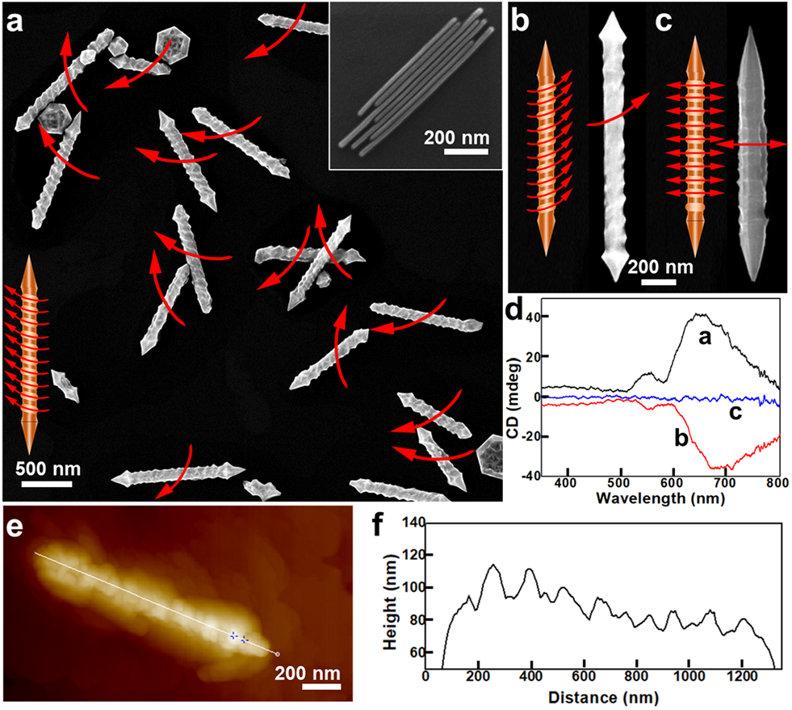
154.“Understandingthe Evolution of Tunable Spiral Threads in Homochiral Au Nano-Screws”, ShenghaoYang, Hongyan Li, Ruirui Liu, Cheng Wang, Jialong Yu, Shumin Li, Yawen Wang*and Hongyu Chen*, Inorganic Chemistry Frontiers, 2022,9(16), 4136-4141.
153.“Fromflat to deep concave: an unusual mode of facet control”, Shenghao Yang,Yonglong Zheng, Guangyu He, Mengmeng Zhang, Hongyan Li, Yawen Wang* and HongyuChen*, Chemical Communications, 2022, 58(41),6128-6131.
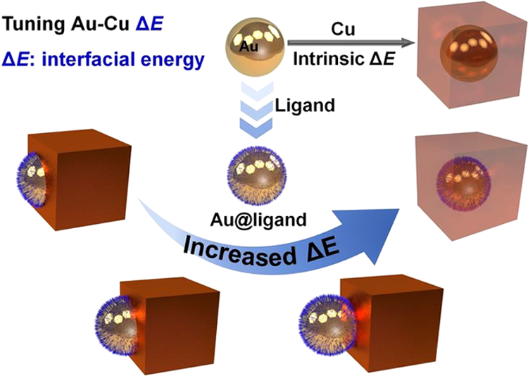
152.“TuningAu–Cu Janus Structures through Strong Ligand-Mediated Interfacial EnergyControl”, Xu Fan, Senyuan An, Jia Jia, Wenjia Xu, Xiaoying Wu, Jianpeng Zong,Yun Wang, Hongyu Chen and Yuhua Feng*, Chemistry of Materials,2022
, 34(13), 6057-6067.
151.“Continuoustuning the wetting growth of Au on Se nanoparticles”, Shuaipeng Chen, ShuaibinLi, Yun Wang, Quan Ren, Yuhua Feng*, Hongyu Chen, Journal ofColloid and Interface Science, 2022,
618(15), 451-11461.
150.“Monitoringthe rapid nanocrystal transformation via trapped intermediates of silicaencapsulation”, Ruoxu Wang, Qian Wang, Huiying Guo & Hongyu Chen*,
Science China Materials, 2022, 65(7), 1963-1970.
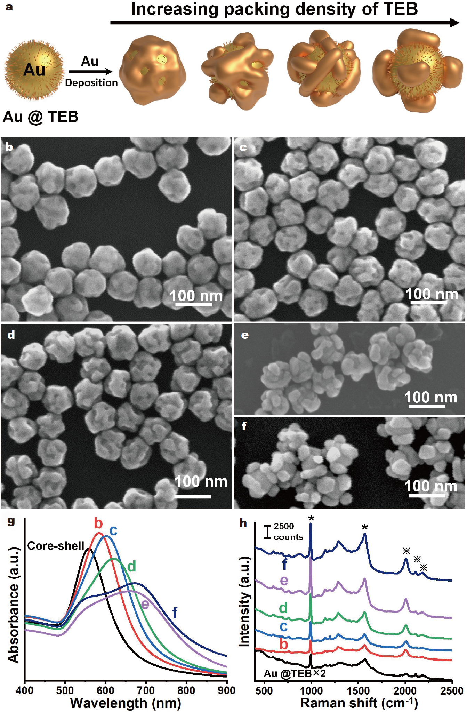
149.“ThePatchy Growth Mode: Modulation of the Au-Au Interface via Phenynyl Ligands”,Jianpeng Zong, Quan Ren, Xiaoli Tian, Ting Xiang, Yuhua Feng and HongyuChen*,
Science China Materials,2022, 65(6), 1687-1695.
148.“ElectrochemicalCatalytic Hydrocarbonylation of Arylacetylenes”, Jiaoyan Zhao, Hongyan Yuan,Ruonan Chen, Hongyu Chen and Yanhua Zhang*,
Asian Journal of Organic Chemistry, 2022, 11, e202100681 (1 of 4).
--------------------2021--------------------
147.“Synthesisof Piperazine Quaternary Ammonium Alkali Catalyst and Its Application inIsocyanate Polymerization”, Xintong Xu, Weimin Tan*, Mengyuan Ji, Yue Yang,Xingxing Rao, Xinliang Luo, Yanhua Zhang*, Hongyu Chen,
Acta Chimica Sinica, 2021, 79(9), 1113-1117 .
146.“Synthesisof Substrate-bound Seaweed-like Au Nanowires with Amino Silane CouplingAgents”, Jialong Yu, Weiyu Wang, Shumin Li, Beibei Yu, Hongyu Chen andYawen Wang*,
Chemical Communications,2021, 58(7),989-992.
145.“FacileSynthesis of Pd and PdPtNi Trimetallic Nanosheets as Enhanced Oxygen ReductionElectrocatalysts”, Lijie Shi, Qian Wang, Quan Ren, Qian Yang, Donghui Zhao,Yuhua Feng, Yawen Wang*, Hongyu Chen,
Small, 2021,18(3), 2103665.
144.“PartialSilica Encapsulation of Fe3O4 Nanoparticles in ReverseEmulsion by Internal Energy Modulation”, Jianpeng Zong, Xiaohui Song, RuoxuWang, Wenjia Xu, Weiwei Zhou, ShuaibinLi, Yuhua Feng* and Hongyu Chen*,
Chemistry of Materials, 2021, 33(21), 8460-8468
.
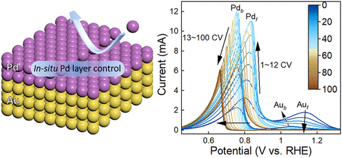
143.“InSitu Precise Tuning of Bimetallic Electronic Effect for Boosting OxygenReduction Catalysis”, Junming Zhang, Weichang Xu, Yuan Liu, Sung-Fu Hung, WeiLiu, Zhenhui Lam, Hua Bing Tao, Hongbin Yang, Weizheng Cai, Hai Xiao, HongyuChen*, Bin Liu*,
Nano Letters,2021, 21(18), 7753-7760.
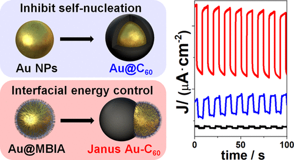
142.“Engineeringthe Spatial Arrangement of Au−C60 Heterostructures”, Wenjia Xu,Shuaipeng Chen, Ruixue Xiao, Jianpeng Zong, Yuhua Feng* and Hongyu Chen*,
Chemistry of Materials, 2021, 33(13), 5268-5275.
141.“Designingcaps for colloidal Au nanoparticles”, Xiaoli Tian, Jianpeng Zong, Yusai Zhou,Dapeng Chen, Jia Jia, Shuaibin Li, Xiaochen Dong, Yuhua Feng* and HongyuChen*,
Chemical Science, 2021, 12(10), 3644-3650.
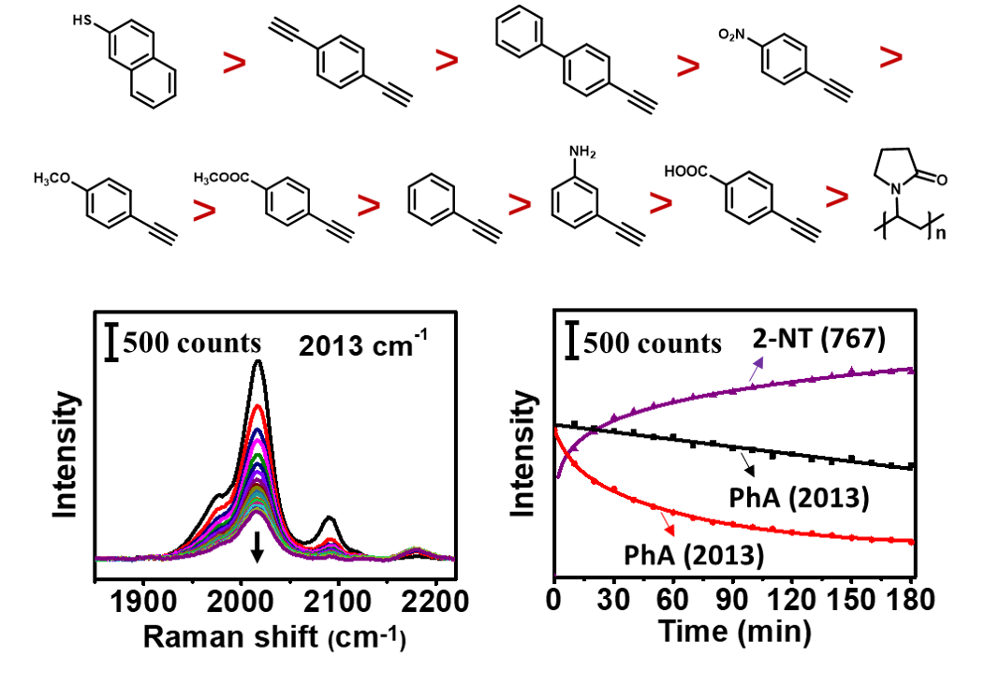
140.“Probingthe ligand exchange kinetics of phenynyl-based ligands on colloidal Aunanoparticles”, Ting Xiang, Jianpeng Zong, Wenjia Xu, Yuhua Feng* and HongyuChen*, Materials Chemistry Frontiers
, 2021, 5, 465-471.
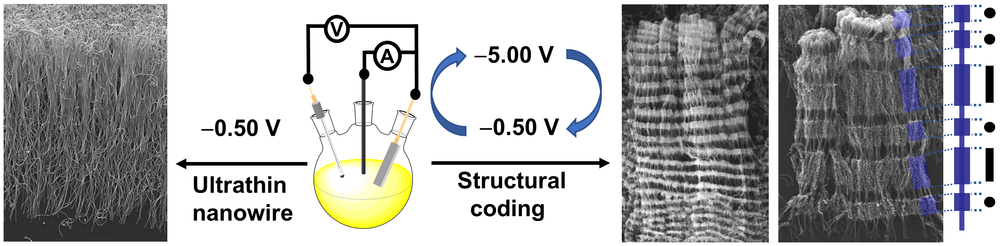
139."Template-lessSynthesis of Coded Au Nanowires”, Xuesong Wu, Hongyan Li, Weiyu Wang, DongmengSu, Xi Wang, Xiaolin Tao, Yawen Wang*, Hongyu Chen*,
Nano Letters, 2021, 21(2), 1156-1160.
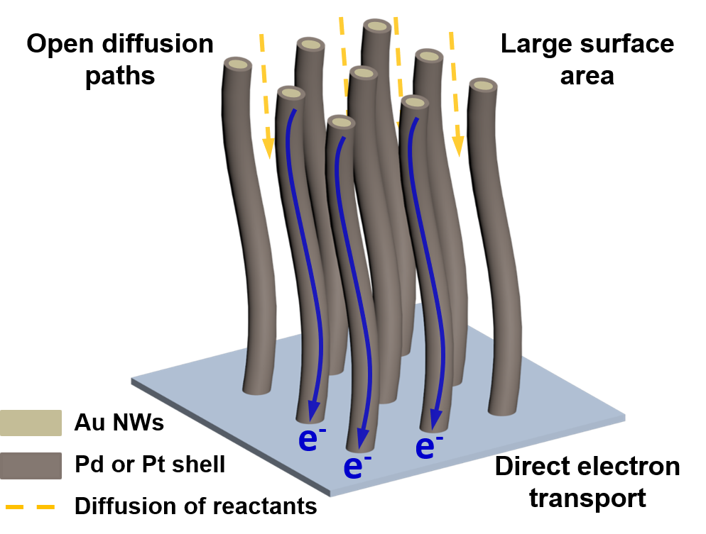
138.“NobleMetal Nanowire Array as Ethanol Oxidation Electrocatalyst”, Zhenhui Lam, CuicuiLiu, Dongmeng Su, Huabing Tao, Hsin-Yi Wang, Jiazang Chen, Weichang Xu, LipingZhang, Yihan Zhu, Lingmei Liu, Yu Han, Hongyu Chen*, Bin Liu*,
Nanoscale Advances, 2021, 3(1), 177-181.
137.“Liquidnanoparticles: manipulating the nucleation and growth of nanoscale droplets”,Ruoxu Wang, Fei Han, Bo Chen, Lingmei Liu, Shaoyan Wang, Hua Zhang, Yu Han, HongyuChen*,
Angewandte Chemie-InternationalEdition, 2021, 60(6),3047-3054.
--------------------2020--------------------
136.“On the Exceptionally High Loading ofL-Proline on Multi-Wall Carbon Nanotubes”, Jiafang Xu, Jichao Liang, ShengHuang, Ge Yang, Keyi Tian, Ruonan Chen, Hongyu Chen and Yanhua Zhang*,
Catalysts, 2020, 10(11), 1246.
135.“Ultrasonic Bending of Silver NanowiresNanowires”, Qiuxian Chen, Wenwen Xin, Qiaozhen Ji, Ting Hu, Jun Zhang, ChengShang, Zhipan Liu, Xueyang Liu*, Hongyu Chen*,
ACS Nano, 2020,14(11), 15286–15292.
134.“Onthe Effect of Fe Oleate By-product in Nano-stirbar Synthesis”, Ting Hu,Qiaozhen Ji, Wen Han Chong, Wenwen Xin, Xueyang Liu* and Hongyu Chen*,
Nanoscale, 2020, 12(36), 18640-18645.
133.“Scalable and Continuous Preparation ofNano-stirbars by Electrospinning”, Qiaozhen Ji, Ting Hu, Qiuxian Chen, WenwenXin, Xueyang Liu* and Hongyu Chen*,
ChemicalCommunications, 2020,56(79), 11767-11770.
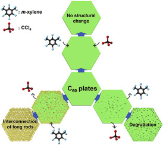
132.“Solvent exchange as a synthetic handle for controlling molecularcrystals”, Shaoyan Wang, Zhuangchai Lai, Thu Ha Tran, Fei Han, Dongmeng Su,Ruoxu Wang, Hua Zhang, Hong Wang, Hongyu Chen
*, Carbon , 2020, 160, 188-195.
131.“ContinuousTuning of the Au-Cu2O Janus Nanostructures for Efficient ChargeSeparation”,
WenjiaXu, Jia Jia, Ti Wang, Chao Li, Bowen He, Jianpeng Zong, Yawen Wang, Hong jinFan, Hongxing Xu, Yuhua Feng* and Hongyu Chen*, AngewandteChemie-International Edition,
2020, 59(49), 22246–22251.
130.“Precise Dimerization of Hollow FullereneCompartments”, Fei Han, Ruoxu Wang, Bo Chen, Yuhua Feng, Huanzhi Liu, ShaoyanWang, Dongmeng Su, Hua Zhang and Hongyu Chen*,
Journal of the American Chemical Society, 2020, 142(36), 15396-15402.
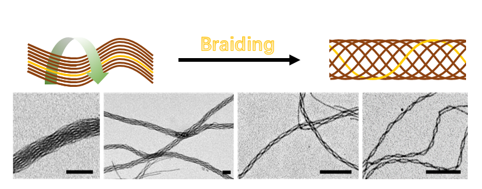
129.“Braiding Ultrathin Au Nanowires intoRopes”, Yan Lu, Xuejun Cheng, Hongyan Li, Jiali Zhao, Weiyu Wang, Yawen Wang*and Hongyu Chen*,
Journal ofthe American Chemical Society, 2020,142(24), 10629–10633.
128.“Fine-tuning the Homometallic Interfaceof Au-on-Au Nanorods and their Photothermal Therapy in NIR-II Window”, Jia Jia,Gongyuan Liu, Wenjia Xu, Xiaoli Tian, Shuaibin Li, Fei Han, Yuhua Feng*,Xiaochen Dong* and Hongyu Chen*,
AngewandteChemie-International Edition, 2020,59(34), 14443-14448.
127.“Multiplexed SERS Barcodes forAnti-counterfeiting”, Yusai Zhou, Gui Zhao, Jingming Bian, Xiaoli Tian, XuejunCheng, Hong Wang* and Hongyu Chen*,
ACSApplied Materials & Interfaces, 2020, 12(25), 28532–28538.
126.“Carboxylation of α, β-UnsaturatedKetones by CO2 Fixation through Photoelectro-chemistry”, RuonanChen, Keyi Tian, Da He, Tianyue Gao, Ge Yang, Jiafang Xu, Hongyu Chen,Dunwei Wang* and Yanhua Zhang*,
ACSApplied Energy Materials, 2020,3(6), 5813-5818.
125.“Controllable Syngas Production on GoldNanowires/Nickel Foam”, Ge Yang, Weichang Xu, Keyi Tian, Dongmeng Su, JiafangXu, Hongyu Chen* and Yanhua Zhang*,
Journalof Colloid and Interface Science, 2020,579, 290-296 .
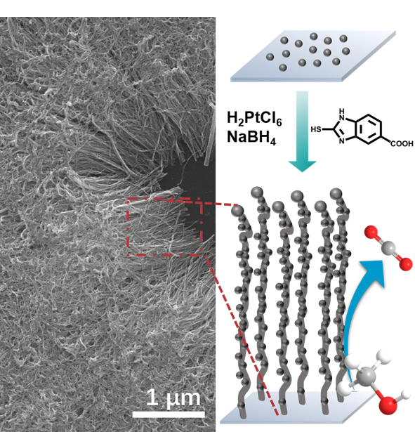
124.“Direct Silica Coating of Drug Crystalsfor Ultra-high Loading”, Neng Wang, Weiwei Zhou, Miao Yan, Mengmeng Zhang, HongWang* and Hongyu Chen*,
Nanoscale,2020, 12, 5353-5358.
--------------------2019--------------------
123.“Catalystsin electro-, photo- and photoelectrocatalytic CO2 reductionreactions”, Yawen Wang*, Da He, Hongyu Chen and Dunwei Wang*,
Journal of Photochemistry andPhotobiology C: Photochemistry Reviews, 2019, 40, 117-149.
122.“Solution Synthesis of Helical Gold Nanowire Bundles”, Xiaolin Tao‡, HongyanLi‡, Beibei Yu, Xuesong Wu, Yan Lu, Yawen Wang* and Hongyu Chen*,
Nanoscale, 2019, 11(42), 19729-19735. 121.“Facile synthesisof ultrathin Pt-Pd nanosheets for enhanced formic acid oxidation and oxygenreduction reaction”, Qian Yang, Lijie Shi, Beibei Yu, Jun Xu, Cong Wei, YawenWang* and Hongyu Chen*,
Journal of Materials Chemistry A, 2019, 7(32), 18846-18851. ,
120.“Understanding photoelectrochemical kinetics in a model CO2fixation reaction”, BingjuZhong‡, Da He‡, Ruonan Chen, Tianyue Gao, Yuanxing Wang, HongyuChen, Yanhua Zhang* and Dunwei Wang*,
Physical Chemistry Chemical Physics, 2019, 21, 17517-17520.
119.“TandemSelf-Assembly of Block Copolymer: From Vesicles to Stacked Bowls”, XiaoqingWang, Songlin Liu, Shida Cao, Fei Han, Hong Wang* and Hongyu Chen*,
Macromolecules, 2019, 52, 6698−6703.
118.“A general approach for encapsulating nanoparticles bypolystyrene-block-poly(acrylic acid) shell in colloidal”, Sichen Feng, XiaohuiSong, Qingchi Xu
*, Xiaoshuang Shen, Jun Xu* and Hongyu Chen, Journal of Physics and Chemistry of Solids,
2019, 135, 109019.
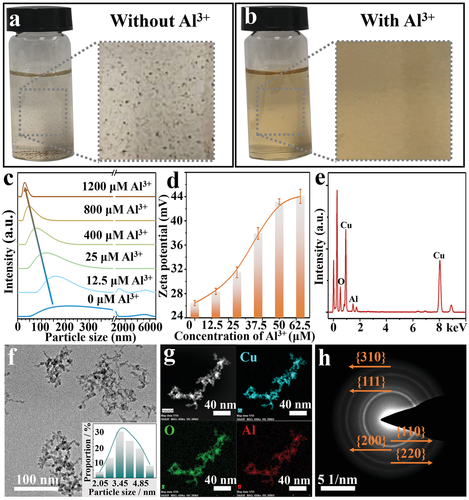
117."A NewType of Capping Agent in Nanoscience: Metal Cations”, Jiawei Liu, Shaoyan Wang,Kai Cai, Yefei Li, Zhipan Liu, Lingmei Liu, Yu Han, Hong Wang, Heyou Han* and HongyuChen*,
Small, 2019,15(18), e1900444.
116.“Agnanoframes: controllable reduction of AgClxBr1-xnanocubes”, Jiali Zhao, Xuejun Cheng, Gui Zhao, Yan Lu, Yawen Wang, Hong Wang*and Hongyu Chen*,
ChemicalCommunication, 2019, 55,5571-5574.
115.“Self-Healingof Polarizing Films via the Synergy between Gold Nanorods and Vitrimer”, GuiZhao, Yusai Zhou, Jiayi Wang, Zhonghua Wu, Hong Wang* and Hongyu Chen*,
Advanced Materials, 2019, 1900363.
114.“OnDemand Synthesis of Hollow Fullerene Nanostructures”, Fei Han, Ruoxu Wang,Yuhua Feng, Shaoyan Wang, Lingmei Liu, Xinghua Li, Yu Han and Hongyu Chen*,
Nature Communications, 2019, 10, 1548.
113.“Two-dimensionalC60 nano-meshes via crystal transformation”, Yilong Lei‡,Shaoyan Wang‡, Zhuangchai Lai, Xin Yao, Yanli Zhao, Hua Zhang and HongyuChen*,
Nanoscale, 2019, 11(18), 8692-8698.
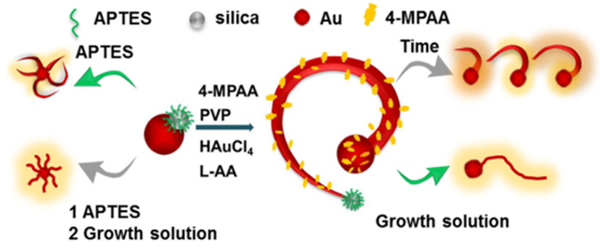
112.“Goldnanospirals on colloidal gold nanoparticles”, Beibei Yu, Qian Yang, Hongyan Li,Zhenzhong Liu, Xiao Huang, Yawen Wang*, Hongyu Chen*,
Journal of Colloid and Interface Science, 2019, 533, 304-310.
--------------------2018--------------------
111.“Nanocarriersand Their Loading Strategies”, Neng Wang, Xuejun Cheng, Nan Li, Hong Wang*,Hongyu Chen*, Advanced Healthcare Materials , 2018,e1801002.
110.“Constructionof Long Narrow Gaps in Ag Nanoplates”, Tao Jiang, Gang Chen , Xiaoli Tian, Shiwei Tang, Jun Zhou, Yuhua Feng * and HongyuChen*, ="" Journal of the American Chemical Society,
2018, 140(46), 15560-15563.
109.“Ageneral approach for encapsulating organic crystals in a polyaniline shell”,Miao Yan, Neng Wang, Bingju Zhong, Xuejun Cheng, Hong Wang*, Hongyu Chen*,
Nanoscale, 2018, 10(45), 21001-21005.
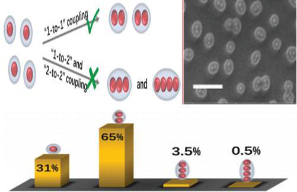
108.“Controllableoligomerization: defying step-growth kinetics in the polymerization of goldnanoparticles”, Xuejun Cheng, Gui Zhao, Yan Lu, Miao Yan, Hong Wang*, HongyuChen*,
Chemical Communications,2018, 54(56), 7746-7749.
107.“TransformableMasks for Colloidal Nanosynthesis”, Zhenxing Wang, Bowen He, Gefei Xu, GuojingWang, Jiayi Wang, Yuhua Feng, Dongmeng Su, Bo Chen, Hai Li, Zhonghua Wu, HuaZhang, Lu Shao* and Hongyu Chen*,
NatureCommunications, 2018, 9,563.
106.“TwistingUltrathin Au Nanowires into Double Helices”, Yan Lu, Shenghao Yang, Jun Xu,Zhenzhong Liu, Hong Wang, Ming Li,Yawen Wang*, Hongyu Chen*,
Small, 2018, 14(34), 1801925.
105.“Synthesisof Substrate-bound Au nanowires via an Active Surface Growth Mechanism”,Xinglong Wang*, Xuesong Wu*, Jiating He, Xiaolin Tao, Hongyan Li, Gui Zhao,Yawen Wang*, Hongyu Chen,
Jove-Journal of Visualized Experiments, 2018,137, e57808.
--------------------2017--------------------
104.“DepletionSphere: Explaining the Number of Ag Islands on Au Nanoparticles”, Yuhua Feng,Yawen Wang‡, Xiaohui Song‡, Shuangxi Xing* and HongyuChen*,
Chemical Science, 2017, 8 (1), 430-436.
103.“Effectof Thiolated Ligands in Au Nanowire Synthesis”, Yawen Wang*, Jiating He, SuzhuYu, Hongyu Chen*, Small,2017, 13(40), 1702121.
102.“SolutionGrowth of Ultralong Gold Nanohelices”, Yong Wang, Jiating He, Xiaoke Mu, DiWang, Bowei Zhang, Youde Shen, Ming Lin, Christian Kübel, Yizhong Huang and HongyuChen*,
ACS Nano, 2017, 11(6), 5538−5546.
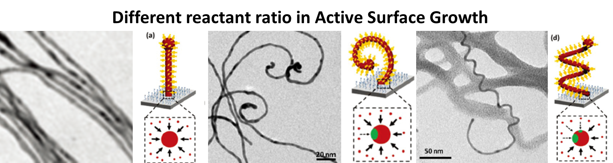
101.“Spiralsand helices by asymmetric active surface growth”, Jiating He, Yong Wang, ZhanxiFan, Yawen Wang, Hua Zhang and Hongyu Chen*,
Nanoscale, 2017,9(46), 18352-18358.
--------------------2016-------------------
100.“DualStimuli-Responsive Vesicular Nanospheres Fabricated by Lipopolymer Hybrids forTumor-Targeted Photodynamic Therapy”, John Johnson V, Chung-Wook Chung, RenjithP Johnson, Young-Il Jeong, Kyu-Don Chung, Dae Hwan Kang, Hongsuk Suh, HongyuChen, Kim Il*,
Biomacromolecules,2016, 17(1), 20-31.
99.“PhospholipidEnd‐Capped Acid‐Degradable Polyurethane Micelles for Intracellular Delivery ofCancer Therapeutics”, Johnson V John, Reju George Thomas, Hye Ri Lee, HongyuChen, Yong Yeon Jeong*, Kim Il*,
AdvancedHealthcare Materials, 2016,5(15), 1874-1883.
98.“Size‐InducedSwitching of Nanowire Growth Direction: a New Approach Toward KinkedNanostructures”, Youde Shen, Oleg I.Lebedev, Stuart Turner, Gustaaf VanTendeloo, Xiaohui Song, Xuechao Yu, Qijie Wang, Hongyu Chen, ShadiA.Dayeh, Tom Wu*,
Advanced FunctionalMaterials, 2016, 26(21),3687-3695. ,
97.“Broadeningthe range of vesicle formation by heating”
, Songlin Liu, Cuicui Liu, Xiaohui Song, IKim, Hongyu Chen*, ="" RSC Advances, 2016, 6(101),98639-98645.
96.“NanoScrews: Asymmetrical Etching ofSilver Nanowires”, Rachel Lee SiewTan, Wen Han Chong, Yuhua Feng, Xiaohui Song, Chu Long Tham, Jun Wei*, MingLin*, Hongyu Chen*,
Journal of the American Chemical Society,
2016,138(34), 10770–10773.
95.“Levelling the Playing Field: Screeningfor Synergistic Effects in Coalesced Bimetallic Nanoparticles”, Rachel Lee Siew Tan, Xiaohui Song, BoChen, Wen Han Chong, Yin Fang, Hua Zhang, Jun Wei* and Hongyu Chen*,
Nanoscale, 2016, 8(6),3447-3453.
94.“Exploiting Rayleigh Instability inCreating Parallel Au Nanowires with Exotic Arrangements”, Yawen Wang, Jiating He, Suzhu Yu and HongyuChen*,
S, mall, 2016, 12(7), 930-938.
--------------------2015--------------------
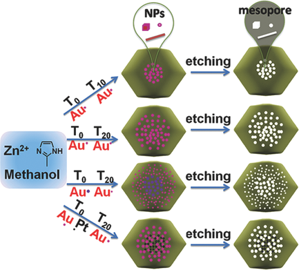
93.“Mesoporous Metal–OrganicFrameworks with Size‐, Shape‐ and Space‐Distribution‐Controlled PoreStructure”, Weina Zhang, Yayuan Liu, Guang Lu, Yong Wang, Shaozhou Li, ChenlongCui, Jin Wu, Zhiling Xu, Danbi Tian, Wei Huang, Joseph S.DuCheneu, W. DavidWei, Hongyu Chen, Yanhui Yang, Fengwei Huo*,
Advanced Materials, 2015,27(18), 2923-2929.
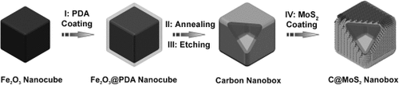
92.“Ultrathin MoS2 Nanosheets Supportedon N‐doped Carbon Nanoboxes with Enhanced Lithium Storage and ElectrocatalyticProperties”, XinYaoYu, Han Hu, Yawen Wang, Hongyu Chen, Xiong Wen Lou*,
AngewandteChemie International Edition, 2015, 54(25),7395-7398.
91.“ AchievingSite-Specificity in Multistep Colloidal Synthesis ”, Yuhua Feng, Yawen Wang, Jiating He,Xiaohui Song, Yee-Yan Tay, Huey Hoon Hng, Xing Yi Ling and Hongyu Chen*,
Journalof the American Chemical Society, 2015, 25(1), 7624–7627.
90.“Thermodynamics versus Kinetics inNanosynthesis”, Yawen Wang, Jiating He, Cuicui Liu, WenHan Chong and Hongyu Chen*,
Angewandte Chemie-International Edition, 2015, 54(7), 2022-2051.
89.“ On the Origin and UnderappreciatedEffects of Ion Doping in Silica ”, Xiaohui Song,Tao Ding, Lin Yao, Ming Lin, Rachel Lee Siew Tan, Cuicui Liu, Katarzyna Sokol,Le Yu, Xiongwen (David) Lou and Hongyu Chen*,
Small, 2015, 11(34) , 4351-4365.
88.“ UsingPolystyrene-block-poly(acrylic acid)-coated Metal Nanoparticles as Monomers forTheir Homo- and Co-polymerization ”, Yawen Wang, Xiaohui Song, Hong Wang, HongyuChen*, Jove- Journal of VisualizedExperiments,
2015, 10, e52594(aninvited paper) .
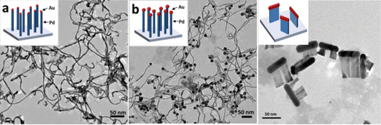
87.“Substrate-bound growth of Au-Pd diblocknanowire and hybrid nanorod-plate”, JiatingHe, Yawen Wang, Zhanxi Fan, Zhenhui Lam, Hua Zhang, Bin Liu, Hongyu Chen*,
Nanoscale, 2015,
7(17), 8115-8121.
86.“Encapsulation of Au Nanoparticles byPoly(4-Vinylpyridine)-Block- Poly(4-Vinylpyridine) for Controlled ChainAssembly”, Cuicui Liu, Jun Xu, Hongyu Chen*,
Journalof Inorganic and Organometallic Polymers and Materials, 2015 , 25(1), 153-158(aninvited article).
85.“Understanding the Phase Emergence ofMesoporous Silica”, Lin Yao, CuicuiLiu, Wen Han Chong, Hong Wang, Liyong Chen and Hongyu Chen*,
Small, 2015, 11(2), 232-238.
--------------------2014--------------------
84.“Periodic AuAg-Ag2S Heterostructured Nanowires”,XunHong, Zongyou Yin,Zhanxi Fan, Yee-Yan Yee-YanTay, Junze Chen,Yaping Du, Can Xue, Hongyu Chen, Hua Zhang*,
Small,2014, 10(3), 479-482.
83.“General Formation of MS (M = Ni, Cu, Mn)Box-in-Box Hollow Structures with Enhanced Pseudocapacitive Properties”, Xin-Yao Yu, Le Yu, Laifa Shen, Xiaohui Song, Hongyu Chen, Xiong Wen Lou*,
AdvancedFunctional Materials, 2014,24(47), 7440-7446.
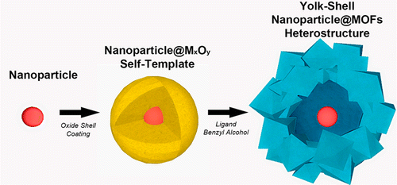
82.“Designable Yolk-Shell Nanoparticle@MOFPetalous Heterostructures”, YayuanLiu, Weina Zhang,Shaozhou Li, Chenlong Cui,Jin Wu, Hongyu Chen, Fengwei Huo*,
Chemistry of Materials,2014, 26(2), 1119-1125.
81.“Chiral Gold Nanowires withBoerdijk-Coxeter-Bernal Structure”, YihanZhu*, Jiating He, Cheng Shang, Xiaohe Miao, Jianfeng Huang, Zhipan Liu, HongyuChen* and Yu Han*,
Journal of the American Chemical Society, 2014,136(36), 12746-12752.
80.“Homo- and Co-polymerization ofPolysytrene-block-Poly(acrylic acid)-Coated Metal Nanoparticles”, Hong Wang, Xiaohui Song (co-1st author),Cuicui Liu, Jiating He, Wen Han Chong and Hongyu Chen*,
ACSNano, 2014, 8(8),8063–8073.
79.“Strategy for Nano-Catalysis in a Fixed-BedSystem”, Jiating He, Weijie Ji, Lin Yao, YawenWang, Bahareh Khezri, Richard D. Webster and Hongyu Chen*,
AdvancedMaterials, 2014, 26(24), 4151-4155.
78.“Bridging the Gap in the MicellarTransformation from Cylinders to Vesicles”, CuicuiLiu, Lin Yao, Hong Wang, Zai Rong Phua, Xiaohui Song and HongyuChen*,
Small, 2014, 10(7), 1332-1340.
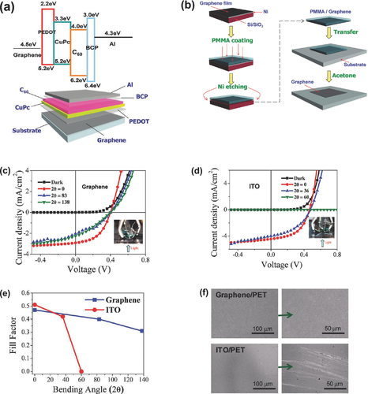
77.“Graphene-Based Materials for Solar CellApplications”, Zongyou Yin, Jixin Zhu, Qiyuan He, XiehongCao, Chaoliang Tan, Hongyu Chen, Qingyu Yan and Hua Zhang*,
AdvancedEnergy Materials, 2014, 4(1),
1300574.
--------------------2013--------------------
76.“Photoluminescence via gap plasmons betweensingle silver nanowires and a thin gold film”, Hailong Hu, Yuriy A Akimov,Huigao Duan, Xianglin Li,Mingyi Liao, Rachel Lee Siew Tan, Lin Wu, Hongyu Chen, Hongjin Fan, Ping Bai, PooiSee Lee, Joel K. W.Yang*,Ze Xiang Shen*,
Nanoscale,2013, 5(24), 12086-12091.
75.“3-D Plasmonic Nanoclusters”, Alexander Urban, Xiaoshuang Shen (co-1stauthor), Yumin Wang, Nicolas Large, Wang Hong, Mark W. Knight, PeterNordlander*, Hongyu Chen* and Naomi J. Halas*,
Nano Letters, 2013,13(9), 4399-4403.
74.“Investigating the Multiple Roles ofPolyvinylpyrrolidone for A General Methodology of Oxide Encapsulation”, Hang Sun, Jiating He, Jiangyan Wang,Shuangyuan Zhang, Cuicui Liu, Thirumany Sritharan, Subodh Mhaisalkar, Ming-YongHan, Dan Wang* and Hongyu Chen*,
Journalof the American Chemical Society, 2013,135(24), 9099-9110.
73.“Stirring in Suspension: Nanometer-sizedMagnetic Stirbars”, Wen Han Chong, LipKet Chin, Rachel Lee Siew Tan, Hong Wang, Ai-Qun Liu and Hongyu Chen*,
AngewandteChemie-International Edition, 2013, 52(33), 8570-8573.
72.“Preservation of Lattice Orientation inCoalescing Imperfectly Aligned Gold Nanowires by a Zipper Mechanism”, Jun Xu, Yawen Wang, Xiaoying Qi, CuicuiLiu, Jiating He, Hua Zhang and Hongyu Chen*,
AngewandteChemie-International Edition, 2013, 52(23),6019-6023.
71.“Density‐Controlled Synthesis of UniformZnO Nanowires: Wide‐Range Tunability and Growth Regime Transition”, Dong Lai Guo, Li Huey Tan, Zhi Peng Wei, HongyuChen* and Tom Wu*,
Small, 2013, 9(12),2069-2075.
70.“Exploiting Core–Shell Synergy forNanosynthesis and Mechanistic Investigation”, HongWang, Liyong Chen, and Hongyu Chen*,
Accounts ofChemical Research, 2013, 46(7),1636-1646.
69.“Emerging Chirality in Nanoscience”, Yong Wang, Jun Xu, Yawen Wang and HongyuChen*,
ChemicalSociety Reviews, 2013, 42(7), 2930-2962.
68.“Forest of Gold Nanowires: A New Type ofNanocrystal Growth”, Jiating He, awenWang (co-1st author), Yuhua Feng, Xiaoying Qi, Zhiyuan Zeng, Qing Liu, Wei ShanTeo, Chee Lip Gan, Hua Zhang and Hongyu Chen*,
ACS Nano, 2013, 7(3), 2733-2740.
67.“General Methodology of Using Oil-in-Waterand Water-in-Oil Emulsions for Coiling Nanofilaments”, LiyongChen, Suzhu Yu, Hong Wang, Jun Xu, Cuicui Liu, Wen Han Chong and HongyuChen*,
Journalof the American Chemical Society, 2013,135(2), 835-843.
66.“Functional Free-Standing GrapheneHoneycomb Films”, Shengyan Yin,Yulia Goldovsky, Moshe Herzberg, Lei Liu, Hang Sun, Yanyan Zhang, Fanben Meng,Xuebo Cao, Darren D. Sun, Hongyu Chen, Ariel Kushmaro, Xiaodong Chen*,
AdvancedFunctional Materials, 2013, 23(23),2972-2978.
65.“Facile and efficient preparation ofanisotropic DNA-functionalized gold nanoparticles and their regioselectiveassembly”, Li Huey Tan, Hang Xing, Hongyu Chenand Yi Lu*,
Journalof the American Chemical Society, 2013,135(47), 17675-17678.
--------------------2012--------------------
64."Nanocompositesof Graphene Oxide and Upconversion Rare-Earth Nanocrystals with SuperiorOptical Limiting Performance”, Wei Wei, Tingchao He, Xue Teng, Shixin Wu,Lin M,Hua Zhang, Jan Ma, Yanhui Yang, Hongyu Chen, Yu Han, Handong Sun*, LingHuang*,
Small, 20 12, 8(14), 2271-2276.
63.“Induced Coiling Action: Exploring theIntrinsic Defects in Five-Fold Twinned Silver Nanowires”, LiangfangZhu, Xiaoshuang Shen, Zhiyuan Zeng, Hong Wang, Hua Zhang and Hongyu Chen*,
ACSNano, 2012, 6(7),6033–6039.
62.“Unconventional Chain Growth Mode in theAssembly of Colloidal Au Nanoparticles”, HongWang, Liyong Chen, Xiaoshuang Shen, Liangfang Zhu, Jiating He and HongyuChen*,
AngewandteChemie-International Edition, 2012, 51(32), 8021-8025.( Highlighted asthe back cover.)
61.“Measuring the Unusually Slow IonicDiffusion in Polyaniline via Study of Yolk-Shell Nanostructures”, Hang Sun, Xiaoshuang Shen, Lin Yao, ShuangxiXing, Hong Wang, Yuhua Feng and Hongyu Chen*,
Journal of theAmerican Chemical Society, 2012, 134(27), 11243-11250.
60.“An Unconventional Role of Ligand inContinuously Tuning of Metal-MetalInterfacial Strain”, Yuhua Feng,Jiating He, Hong Wang, Yee Yan Tay, Hang Sun, Liangfang Zhu and Hongyu Chen*,
Journalof the American Chemical Society, 2012,134(4), 2004–2007.
59.“Developing Mutually EncapsulatingMaterials for Versatile Syntheses of Multilayer Metal-Silica-Polymer HybridNanostructures”, Liangfang Zhu, Hong Wang, Xiaoshuang Shen,Liyong Chen, Yawen Wang, and Hongyu Chen*,
Small, 2012, 8(12), 1857-1862.
58.“Seeded growth of two-dimensionaldendritic gold nanostructures”, MingPan, Hang Sun, Jun Wei Lim, Saidur Rahman Bakaul, Yi Zeng, Shuangxi Xing, TomWu, Qingyu Yan and Hongyu Chen*,
ChemicalCommunications, 2012 , 48(10), 1440-1442, Special Issue: EmergingInvestigators 2012.
57.“Engineering "Hot" Nanoparticlesof Surface-Enhanced Raman Scattering by Embedding Reporter Molecules in MetalLayers”, Yuhua Feng, Yong Wang, Hong Wang, TaoChen, Yee Yan Tay, Lin Yao, Qingyu Yan, Shuzhou Li* and Hongyu Chen*,
Small, 2012, 8(2), 246-251.
56.“Experimental and theoretical studies onpyrene-grafted polyoxometalate hybrid”, JunkuoGao, Xinfeng Liu, Yi Liu, Lingling Yu, Yuhua Feng, Hongyu Chen, YongxinLi, Ganguly Rakesh, Cheng Hon Alfred Huan, Tze Chien Sum, Yang Zhao, and QichunZhang*,
DaltonTransactions, 2012, 41(39), 12185-12191.
55.“The Effect of Surface Coating on EnergyMigration-Mediated Upconversion”, QianqianSu, Sanyang Han, Xiaoji Xie, Haomiao Zhu, Hongyu Chen, Chih-Kai Chen,Ru-Shi Liu, Xueyuan Chen, Feng Wang* and Xiaogang Liu*,
Journal of theAmerican Chemical Society, 2012, 134(51),20849-20857.
--------------------2011--------------------
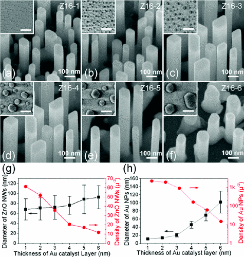
54.“Metal-layer- assisted coalescence of Aunanoparticles and its effect on diameter control in vapor-liquid-solid growthof oxide nanowires”, Dong Lai Guo, XiaoHuang, Guo Zhong Xing, Zhou Zhang, Gong Ping Li, Mi He, Hua Zhang, HongyuChen and Tom Wu*,
Physical Review B, 2011, 83(4), 045403.
53.“Chiral Transformation: from SingleNanowire to Double Helix”, YongWang, Qingxiao Wang, Hang Sun, Weiqing Zhang, Gang Chen, Yawen Wang, XiaoshuangShen, Yu Han, Xianmao Lu and Hongyu Chen*,
Journal of theAmerican Chemical Society, 2011, 133(50),20060-20063.
52.“Revisiting Stöber Method: Inhomogeneityin Silica Shells”, Yi Jian Wong,Liangfang Zhu, Wei Shan Teo, Yan Wen Tan, Yanhui Yang, Chuan Wang* and HongyuChen*,
Journalof the American Chemical Society, 2011,133(30), 11422–11425.
51.“Triple-layer (Au@Perylene)@PolyanilineNanocomposite: Unconventional Growth of Faceted Organic Nanocrystal onPolycrystalline Au”, Melinda Sindoro,Yuhua Feng, Shuangxi Xing, Hai Li, Jun Xu, Hailong Hu, Cuicui Liu, Yawen Wang,Hua Zhang, Zexian Shen and Hongyu Chen*,
AngewandteChemie-International Edition, 2011, 50(42),9898-9902.
50.“ControllingReversible Elastic Deformation of Carbon Nanotube Rings”, Liyong Chen, Hong Wang, Jun Xu, XiaoshuangShen, Lin Yao, Liangfang Zhu and Hongyu Chen*,
Journal of theAmerican Chemical Society, 2011, 133, 9654-9657.
49.“Assemblyof Colloidal Nanoparticles Directed by the Microstructures of PolycrystallineIce”, Xiaoshuang Shen, Liyong Chen, LiangfangZhu, Hong Wang, Cuicui Liu, Yong Wang, Qihua Xiong and Hongyu Chen*,
ACSNano, 2011, 5(10),8426-8433.
48.“One-stepsynthesis of composite vesicles: Direct polymerization and style in situover-oxidation of thiophene”, HangSun, Jiating He, Shuangxi Xing, Liangfang Zhu, Yi Jian Wong, Yawen Wang, HongjuZhai and Hongyu Chen*,
ChemicalScience, 2011, 2, 2109-2114.
47.“Toroidal Micelles ofPolystyrene-block-Poly(acrylic acid): A Study on Micelle Transformation”, Cuicui Liu, Gang Chen, Hang Sun, JunXu, Yuhua Feng, Zhou Zhang, Tom Wu and Hongyu Chen*,
Small, 7, 2721-2726.
46.“Controlled Synthesis of Ag/Ag/C HybridNanostructures and their Surface-Enhanced Raman Scattering Properties”, Xiaojun Zhang, Ziyang Lu, Daohao Sim,Shuzhou Li, Yuhua Feng, Jan Ma, Hongyu Chen, Freddy Boey, Huey Hoon Hng*, Qingyu Yan*,
Chemistry - AEuropean Journal, 2011,
17(48), 13386–13390.
45.“A symmetry-adapted shell transformationof core-shell nanoparticles for binary nanoassembly”, ShuangxiXing*, Jiating He, Xianchun Liu and Hongyu Chen,
Chemical Communications, 2011, 47(46),12533-12535.
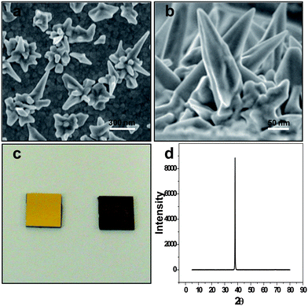
44.“Directgrowth of highly branched crystalline Au nanostructures on an electrodesurface: their surface enhanced Raman scattering and electrocatalyticapplications”, Hailan Chen, Palanisamy Kannan, LonghuaGuo, Hongyu Chen, and Dong-Hwan Kim*,
Journal ofMaterials Chemistry, 2011, 21(45),18271-18278.
43.“Planar Macrocyclic Fluoropentamers asSupramolecular Organogelators”, ChangliangRen, Shengyu Xu, Jun Xu, Hongyu Chen and Huaqiang Zeng*,
OrganicLetters, 2011, 13(15),3840-3843.
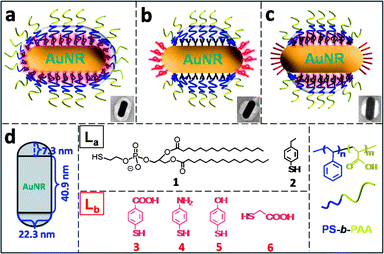
42.“Site-Selective Localization of Analyteson Gold Nanorod Surface for Investigating Field Enhancement Distribution inSurface-Enhanced Raman Scattering”, Tao Chen*,Chaolin Du* Li Huey Tan, Zexiang Shen and Hongyu Chen,
Nanoscale, 2011, 3(4), 1575-1581.
--------------------2010--------------------
41.“A systems approach towards thestoichiometry-controlled hetero-assembly of nanoparticles”, Yong Wang, Gang Chen, Miaoxin Yang, GeorgSilber, Shuangxi Xing, Li Huey Tan, Feng Wang, Yuhua Feng, Xiaogang Liu,Shuzhou Li and Hongyu Chen*,
Nature Communications, 2010, 1, 87.
40.“MechanicalNano-Springs: Induced Coiling and Uncoiling of Ultrathin Au Nanowires”, Jun Xu, Hong Wang, Cuicui Liu, YaimeiYang, Tao Chen, Yawen Wang, Feng Wang, Xiaogang Liu, Bengang Xing* and HongyuChen*,
Journalof the American Chemical Society, 2010, 132(34),11920-11922.
( Highlighted in RSC Chemistry World, ACSNoteworth Chemistry, and Nature Asia. )
39."Scalable Routes to Janus Au-SiO2 andTernary Ag-Au-SiO2 Nanoparticles”, Tao Chen, Gang Chen, Shuangxi Xing, Tom Wu and HongyuChen*,
Chemistryof Materials, 2010, 22(13),3826-3828.
38."3D Gold Dendrimers: Seeded Growth ofMulti-Generation Fractal Architecture ”, Ming Pan, Shuangxi Xing, Ting Sun, Wenwen Zhou, Melinda Sindoro, HuiHian Teo, Qingyu Yan and Hongyu Chen*,
ChemicalCommunications, 2010,46(38), 7112-7114 (Highlighted on the inside cover).
37.“MechanisticInvestigation in the Spontaneous Linear Assembly of Gold Nanospheres”, Miaoxin Yang, Gang Chen, Yunfeng Zhao,Georg Silber, Yong Wang, Shuangxi Xing, Yu Han* and Hongyu Chen*,
PhysicalChemistry Chemical Physics, 2010, 12(38),11850-11860 ( an invited paper to a themed issue on Supraparticle PhysicalChemistry).
36.“Probingthe Kinetics of Drug Release from Nanocarriers to Nanoacceptors”, Hong Wang, Jun Xu, Jinghao Wang, Tao Chen,Yong Wang, Yan Wen Tan, Haibin Su, Khai Leok Chan and Hongyu Chen*,
AngewandteChemie-International Edition, 2010, 49(45), 8426-8430.
35.“Reducingthe Symmetry of Bimetallic Au@Ag Nanoparticles by Exploiting Eccentric PolymerShells”, Shuangxi Xing, Yuahua Feng, Yee Yan Tay,Tao Chen, Jun Xu, Ming Pan, Huey Hoon Hng, Qingyu Yan and Hongyu Chen*,
Journalof the American Chemical Society, 2010, 132(28),9537-9539.
34.“Hotspot-InducedTransformation of Surface-Enhanced Raman Scattering Fingerprints”, Tao Chen, Hong Wang, Gang Chen, YongWang, Yuhua Feng, Wei Shan Teo, Tom Wu and Hongyu Chen*,
ACSNano, 2010, 4(6), 3087-3094.
33.“Measuringthe Ensemble-Averaged SERS Enhancement from Hot-Spots of Nanoparticle Dimersand Trimers”, Gang Chen, Yong Wang, Miaoxin Yang, JunXu, Sook Jin Goh, Ming Pan, and Hongyu Chen*,
Journal of theAmerican Chemical Society, 2010, 132(11), 3644-3645.
32.“Probingthe Kinetics of Ligand Exchange on Colloidal Gold Nanoparticles bySurface-Enhanced Raman Scattering”, YuhuaFeng, Shuangsi Xing, Jun Xu, Hong Wang, Jun Wei Lim and Hongyu Chen*,
DaltonTransactions, 2010, 39(2), 349-351( A theme issue “ showcasingthe strength of research being carried out by tomorrow's leaders in the fieldof inorganic chemistry”).
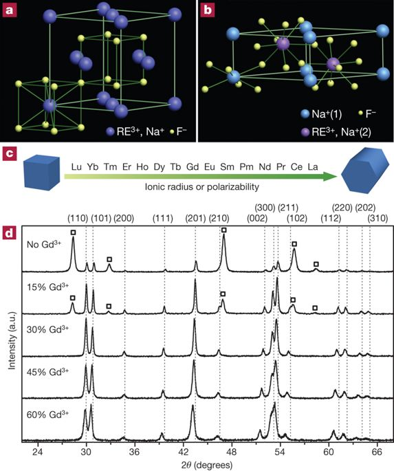
31.“Simultaneousphase and size control of upconversion nanocrystals through lanthanide doping”, Feng Wang, Yu Han, Chin Seong Lim, YunhaoLu, Juan Wang, Jun Xu, Hongyu Chen, Chun Zhang, Minghui Hong andXiaogang Liu*,
Nature, 2010, 463(7284) , 1061-1065.
30.“TunableUpconversion Emissions from Lanthanide-doped Monodisperse beta-NaYF4Nanoparticles”, Feng Wang, Juan Wang, Jun Xu, XuejiaXue, Hongyu Chen and Xiaogang Liu*,
SpectroscopyLetters, 2010,
43(5), 400-405( Specialedition: Spectroscopy of Lanthanide Materials II).
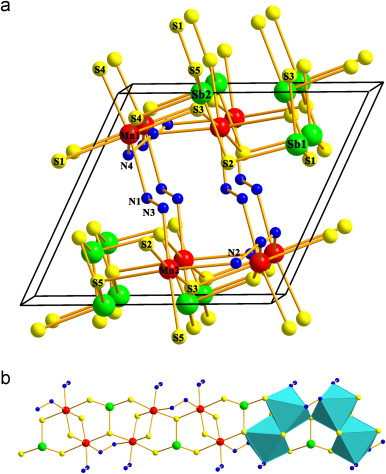
29.“Hydrazine-hydrothermalmethod to synthesize three-dimensional chalcogenide framework forphotocatalytic hydrogen generation”, Yi Liu,Pushkar D. Kanhere, Chui Ling Wong, Yuefeng Tian, Yuhua Feng, Freddy Boey, TomWu, Hongyu Chen, Tim J. White, Zhong Chen and Qichun Zhang*,
Journalof Solid State Chemistry, 2010, 183(11),2644-2649.
28.“Lanthanide-dopedLiYF4 Nanoparticles: Synthesis and Multicolor Upconversion Tuning”, Juan Wang, Feng Wang, Jun Xu, YongWang, Yongsheng Liu, Xueyuan Chen, Hongyu Chen, Xiaogang Liu*,
ComptesRendus Chimie, 2010, 13, 731-736.
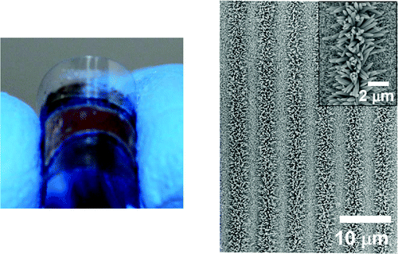
27.“Generationof dual patterns of metal oxide nanomaterials based on seed-mediated selectivegrowth”, Zongyou Yin, Qiyuan He, Xiao Huang, GangLu, Huey Hoon Hng, Hongyu Chen, Can Xue, Qingyu Yan, Freddy Boey, QichunZhang, Hua Zhang*,
Langmuir, 2010 , 26(7), 4616-4619.
--------------------2009--------------------
26.“High-PuritySeparation of Gold Nanoparticle Dimers and Trimers”, GangChen, Yong Wang, Li Huey Tan, Miaoxin Yang, Lee Siew Tan, Yuan Chen and HongyuChen*,
Journalof the American Chemical Society, 2009, 131(12), 4218-4219.
25.“Fabricationof Polymer Nanocavities with Tailored Openings”, LiHuey Tan, Shuangxi Xing, Tao Chen, Gang Chen, Xiao Huang, Hua Zhang and HongyuChen*,
ACSNano, 2009, 3(11),3469-3474.
24.“FacileFabrication of Triple-layer (Au@Ag)@Polypyrrole Core-Shell and (Au@H2O)@PolypyrroleYolk-Shell Nanostructures”, ShuangxiXing, Li Huey Tan, Tao Chen, Yanhui Yang and Hongyu Chen*,
ChemicalCommunications, 2009, 13, 1653-1654.
23.“HighlyControlled Core/Shell Structures: Tunable Conductive Polymer Shells on GoldNanoparticles and Nanochains”, ShuangxiXing, Li Huey Tan, Miaoxin Yang, Ming Pan, Yunbo Lv, Qinghu Tang, Yanhui Yangand Hongyu Chen*,
Journal of Materials Chemistry, 2009, 19(20), 3286-3291.
22.“Developmentof Polymer-Encapsulated Metal Nanoparticles as Surface-Enhanced RamanScattering Probes”, Miaoxin Yang, TaoChen, Wei Siang Lau, Yong Wang, Qinghu Tang, Yanhui Yang and Hongyu Chen*,
Small, 2009, 5(2), 198-202 ( Cover page of Jan 19thissue, and winner of the 2009 Cover of the Year competition in style Small).
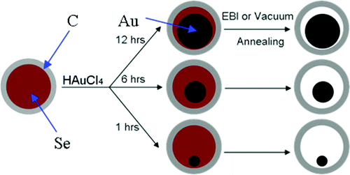
21.“Fabricationof Core/Shell Structure of M@C (M=Se, Au, Ag2Se) and Transformationto Yolk/Shell Structure by Electron Beam Irradiation or Vacuum Annealing”, Jixin Zhu, Ting Sun, Huey Hoon Hng, JanMa, Freddy Yin Chiang Boey, Xiong Wen Lou, Hua Zhang, Can Xue, Hongyu Chenand Qingyu Yan*,
Chemistry of Materials, 2009, 21(16),3848-3852.
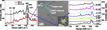
20.“Polymer-encapsulated silver nanoparticle monomer and dimer forsurface-enhanced Raman scattering”,Chaoling Du, Miaoxin Yang, Yumeng You, Tao Chen, Hongyu Chen and ZexiangShen*,
ChemicalPhysics Letters, 2009,473(4-6),317-320.
--------------------2008--------------------
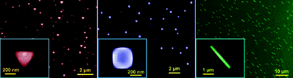
19.“Self-assembledshape- and orientation- controlled synthesis of nanoscale Cu3Sitriangles, squares, and wires”, ZhouZhang, Lai Mun Wong, Hock Guan Ong, Xin Jiao Wang, Jun Ling Wang, Shi Jie Wang, Hongyu Chen* and Tom Wu*,
Nano Letters, 2008, 8(10), 3205-3210. ( Highlighted by NatureAsia)
18.“ControlledAssembly of Eccentrically Encapsulated Gold Nanoparticles”, Tao Chen, Miaoxin Yang, Xinjiao Wang, LiHuey Tan and Hongyu Chen*,
Journal of the American Chemical Society, 2008, 130(36),11858-11859.
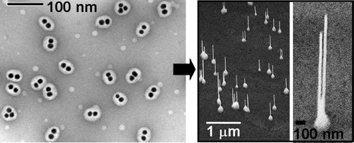
17.“Polymer-EncapsulatedGold-Nanoparticle Dimers: Facile Preparation and Catalytical Application inGuided Growth of Dimeric ZnO-Nanowires”, XinjiaoWang, Gongping Li, Tao Chen, Miaoxin Yang, Zhou Zhang, Tom Wu* and HongyuChen*,
NanoLetters, 2008, 8(9), 2643-2647.
16.“Encapsulationof single small gold nanoparticles by diblock copolymers”, Hongyu Chen*, Sinoj Abraham,Juana Mendenhall, Soazig C. Delamarre, Kahli Smith, Il Kim and Carl A. Batt,
ChemPhysChem, 2008,9(3), 388-392.
15.“Tailoringphotoluminescence in ZnO nanowires using Au nanoparticles”, Tao Chen, Guozhong Xing, Zhou Zhang, HongyuChen and Tom Wu*,
Nanotechnology, 2008, 19(43), 435711.
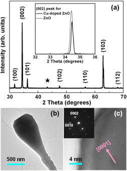
14.“Tunablewettability in surface-modified ZnO-based hierarchical nanostructures”, Gongping Li, Tao Chen, Bin Yan, Yun Ma,Zhou Zhang, Tom Yu, Zexiang Shen, Hongyu Chen and Tom Wu*,
AppliedPhysics Letters, 2008, 92(17),173104.
--------------------2007--------------------
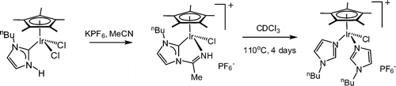
13.“Ir(III)-InducedC-Bound to N-Bound Tautomerization of a N-Heterocyclic Carbene”, Xinjiao Wang, Hongyu Chen and Xingwei Li*,
Organometallics, 2007,26(18), 4684-4687.
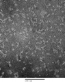
12.“Near-InfraredFluorescence Imaging with Water-Soluble Lead Salt Quantum Dots ” ,
Byung-Ryool Hyun*, Hongyu Chen, Diego A. Rey, FrankW. Wise, and Carl A. Batt,
Journal of Physical Chemistry B, 2007,111(20), 5726-5730.
11.“HomogeneousCatalytic Water-Oxidation by [(terpy)2Mn2III/IV(µ-O)2(H2O)2](NO3)3 in the presence of Ce4+
” ,
Ranitendranath Tagore, HongyuChen , Hong Zhang, Robert H.Crabtree and Gary W. Brudvig*, Inorganica Chimica Acta, 2007, 360(9), 2983-2989.
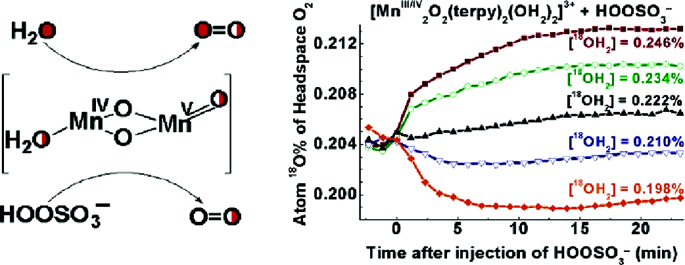
10.“Speciationof the Catalytic Oxygen Evolution System: [MnIII/IV2O2(terpy)2(H2O)2](NO3)3+ HSO5
- ” , Hongyu Chen, Ranitendranath Tagore, Gerald Olack,John S. Vrettos, Tsu-Chien Weng, James Penner-Hahn, Robert H. Crabtree* andGary W. Brudvig*,
Inorganic Chemistry, 2007,
46(1), 34-43.
--------------------2006--------------------
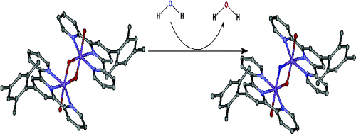
9. “Determination of Ligand Exchange Rates in di- m-oxo di-Manganese Complexes by ElectrosprayIonization Mass Spectroscopy”
, Ranitendranath Tagore, Hongyu Chen, Robert H.Crabtree* and Gary W. Brudvig*
, Journalof the American Chemical Society
, 2006,128(29), 9457-9465.
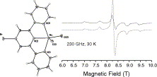
8.“Amultifrequency high-field EPR (9-285 G Hz) investigation of a series ofdichloride mononuclear penta-coordinated Mn(II) complexes”, Carole Duboc*, Vincent. Asiter-Perret, HongyuChen, Jacques Pécaut, Robert H. Crabtree, Gary W. Brudvig, Marie N.Collomb,
InorganicChimica Acta, 2006, 359(5), 1541-1548.
7. “Dendrimer-Scaffold-Based Electron-Beam Patterningof Biomolecules” , Parijat Bhatnagar, Sonny S. Mark, Il Kim, HongyuChen, Brad Schmidt, Michal Lipson, Carl A. Batt* , Advanced Materials, 2006,18(3), 315-319.
--------------------2001-2005--------------------
6. “New Linear High-Valent Tetranuclear Manganese-OxoCluster Relevant to the Oxygen-Evolving Complex of Photosystem II with Oxo,Hydroxo and Aqua Coordinated to a Single Mn(IV)”
, HongyuChen , Marie N. Collomb, Carole Duboc, Genevieve Blondin,Eric. Rivière, J. W. Faller, Robert H. Crabtree*
and Gary W. Brudvig*, ="" InorganicChemistry, 2005, 44(25), 9567-9573.
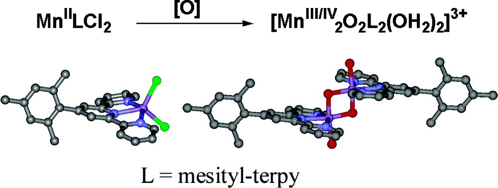
5.“GeneralSynthesis of Di-μ-oxo Dimanganese Complexes as Functional Models for the OxygenEvolving Complex of Photosystem II
” ,
Hongyu Chen, Ranitendranath Tagore, Siddhartha Das,Christopher Incarvito, J. W. Faller, Robert H. Crabtree* and Gary W. Brudvig*,
Inorganic Chemistry , 2005, 44(21),7661-7670.
4.“High‐SpinChloro Mononuclear MnIII Complexes: A Multifrequency High‐Field EPR Study
”, ClaireMantel, Hongyu Chen ,Robert H. Crabtree, Gary W. Brudvig, Jacques Pécaut, Marie N. Collomb* andCarole Duboc*, ChemPhysChem
, 2005, 6(3), 514-546.
3.“Dimer-of-Dimers Model for the Oxygen-Evolving Complex of PhotosystemII. Synthesis and Properties of [MnIV4O5(terpy)4(H2O)2](ClO4)6
”, Hongyu Chen, J. W. Faller,Robert H. Crabtree* and Gary W. Brudvig*, Journal of the AmericanChemical Society
, 2004, 126(23), 7345-7349.
2.“Electrochemical properties of [MnIII(terpy)(N3)3](terpy=2,2':6',2''-terpyridine) in CH3CN
¾¾ Electrogeneration ofdimanganese(II) di- m-azido and dimanganese(IV) di- m-oxocomplexes”, Carole Baffert, HongyuChen , Robert H. Crabtree, Gary W. Brudvig* and Marie N. Collomb*, Journalof Electroanalytical Chemistry
,2001, 506(2), 99-105.
1. “Characterization of the O2-evolving reaction catalyzed by[(terpy)(H2O)MnIII(
m-O)2MnIV(OH2)(terpy)](NO3)3(terpy = 2,2':6,2''-terpyridine)”, Julian Limburg, John S. Vrettos,
Hongyu Chen, Julio C. de Paula,Robert H. Crabtree* and Gary W. Brudvig*, Journal of the AmericanChemical Society,
2001, 123(3),423-430.